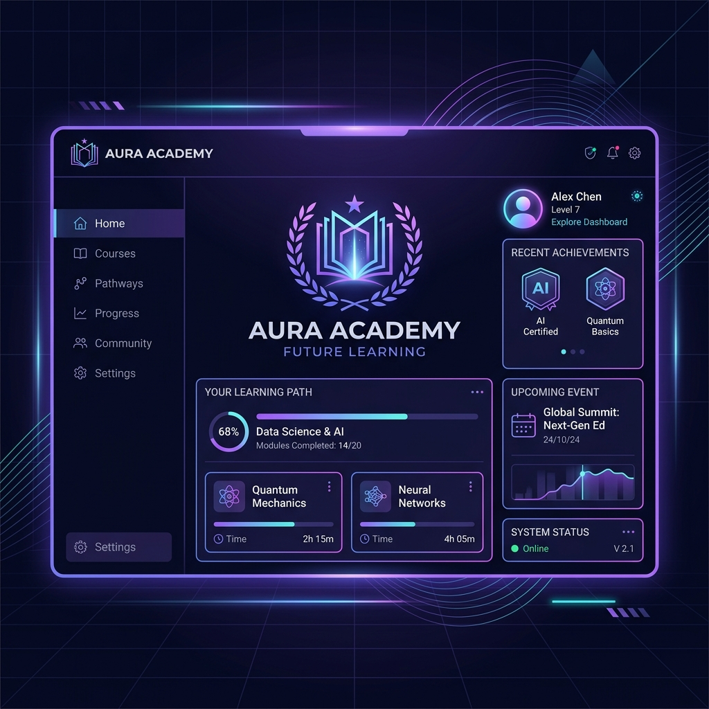
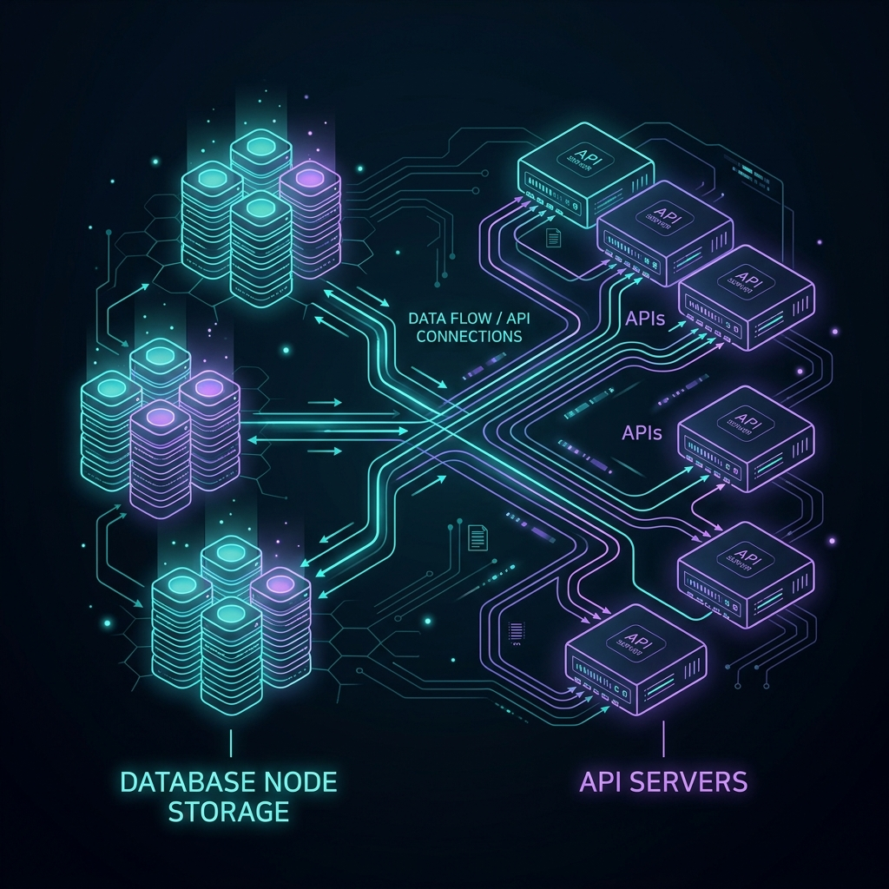
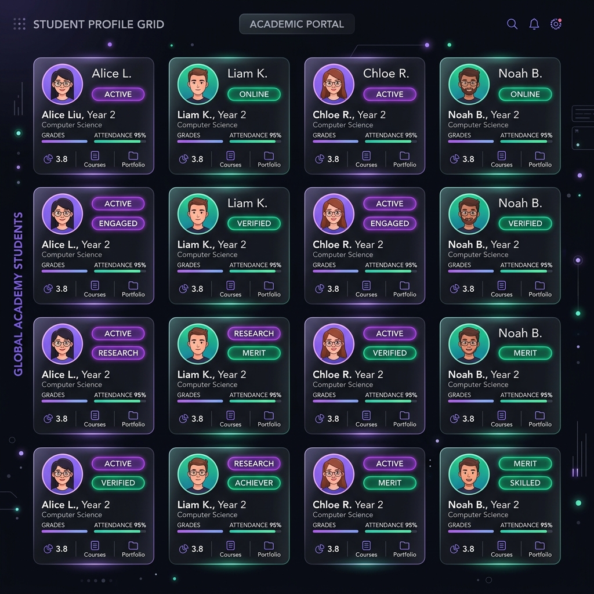

A premium, full-stack student roster, catalog registry, and analytical grade management console built for modern schools.

Nexus Student Management System replaces outdated administrative sheets with a lightning-fast, secure, and beautiful centralized full-stack dashboard.
Empowering administrators with modern software tools to track curriculums and monitor student outcomes.
Our stack prioritizes lightweight dependencies, rapid load times, and easy local execution on any system configuration.

The application is divided into 4 primary modules, each accessible from the unified navigation sidebar.
High-level analytical stats and system event feeds.
Interactive table with CRUD modal operations.
Department lists and enrolled student drawers.
Inline editable grades and letter spread tags.
The central hub aggregates records into executive KPIs and logs background actions in real-time.
A high-performance student database layout supporting extensive filter and query combinations.

Curriculum records are presented in modern visual cards listing credit tallies and assignees.
Instructor: Dr. Alan Turing
Enables grading administrators to evaluate student outcomes and update sheets inline.
Our REST interfaces are organized logically to ensure complete security, scalability, and easy client mappings.
GET: Fetch student directory with GPA summaries.
POST: Register profile.
DELETE: Remove student.
GET: Fetch course grid with tally counters.
POST: Create course.
DELETE: Remove course.
GET: Flattened list of course grades.
PUT: Insert or update numeric scores inline.
Nexus Academy features premium visual parameters tailored to wow administrators at first glance.
Our modular setup is engineered to support future feature integrations without breaking existing modules.
The project provides a highly robust blueprint to expand into a production-grade educational platform.